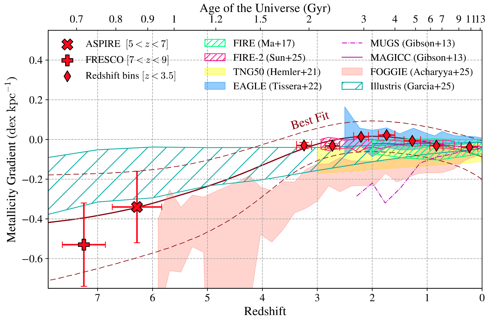

A 13-Billion-Year View of Galaxy Growth: Metallicity Gradient Evolution from the Local Universe to z = 9 with JWST and Archival Surveys
Li et al. (2025b)
link to this paper: https://arxiv.org/pdf/2506.12129
The galaxy gas-phase metallicity gradients have been extensively studied over the past four decades, both in the local and high-redshift universe, as they trace the baryon cycle and growth of galaxies. With the unprecedented spatial resolution and sensitivity of JWST, it is now possible to measure metallicity and its radial gradients out to redshifts as high as $z = 9$. Here, we present a sample of 455 spectroscopically confirmed galaxies from redshifts $1.7 \lesssim z \lesssim 9$ that are spatially resolved on sub-kiloparsec (kpc) scales by deep JWST NIRCam or NIRISS Wide Field Slitless Spectroscopy (WFSS). Synthesizing these new JWST observations with legacy observations from the literature, we observe that at redshift $z > 5$, galaxy centers are more metal-rich, exhibiting negative metallicity gradients of $\sim-0.4$ dex kpc$^{-1}$. These gradients flatten over time, reaching near-zero around $z \approx 2$, coinciding with the peak of the cosmic star formation rate. Beyond this point, the gradients become negative again at lower redshifts approaching $z=0$. This evolution likely reflects transitions in galaxy formation modes: an inside-out growth phase dominated by intense central star formation with inefficient feedback and limited gas mixing during ``cosmic dawn", enhanced gas mixing due to feedback-driven wind and gas accretion at ``cosmic noon", and a later phase of slow evolution and reduced feedback toward the present day. These physical processes, including gas accretion and feedback, not only regulate star and galaxy formation on a cosmic scale but also shape the evolutionary pathways of individual galaxies over cosmic time.
The comparison between the observed best-fit redshift evolution of metallicity gradients and predictions from different suites of cosmological simulations. The simulations including FIRE, FIRE-, TNG50, EAGLE, MUGS/MAGICC, FOGGIE, and Illustris are marked in different colors.